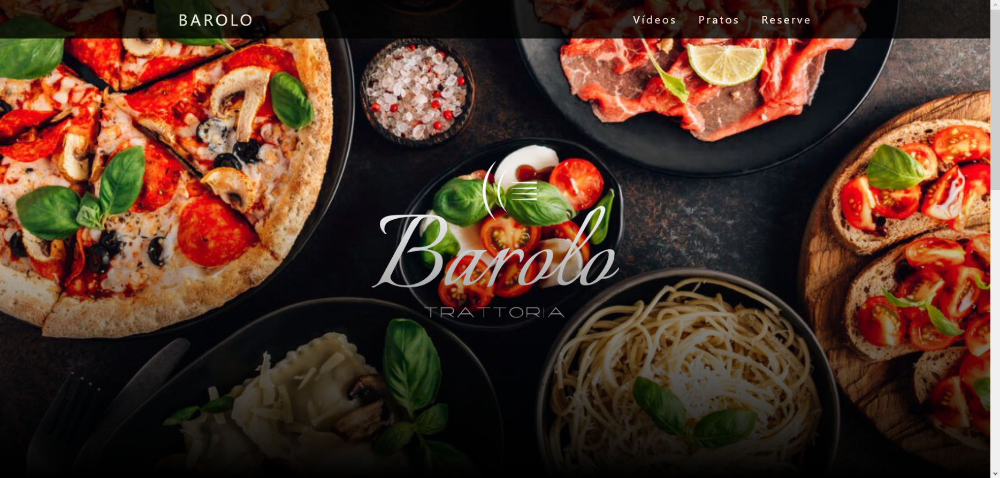

Bem Vindo ao Portfólio de
Afonso Rocha Rekbaim
História
Sou natural de Curitiba-PR, tenho 18 anos e sou estudante do curso de Ciência da Computação na PUC-PR. participo do PIBIC voltado ao alinhamento e segmentação de modelos 3D texturizados com foco na tireoide a fim de identificar bócios. Sou músico, toco violão, violino e piano. Adoro a área de Inteligência Artifical , Machine Learning, Deep Learning, etc.

Projetos
Alguns dos meus trabalhos mais relevantes são:
A NEW LIFE
A New Life é um jogo estilo plataforma criado utilizando o Construct com uma equipe de 6 pessoas, no qual a sociedade fica presa em Bunkers por 500 anos devido a incidentes nucleares. Você joga controlando um sobrevivente que sai em busca de recursos e se depara com os cenários de destruição e vida modificados pela liberação de radiação.
Aquário Virtual
Esse é um aplicativo criado em Java utilizando o Processing sobre espécies exóticas no fundo do oceano, nele é possível conhecer 6 espécies, algumas delas bem estranhas. Cada integrante do grupo escolheu uma espécie para ser apresentada!
Site com aplicativo Web

Criação de um site conectado a um banco de dados. Foram utilizadas 5 linguagens de programação e 14 aqruivos totalizando quase 800 linhas de código para a criação desse site. Nele é possível ver vídeos do youtube por meio de players, ver imagens dos pratos e a parte mais importante, é possível fazer reservas completas que vão direto para um banco de dados criado em PHP por um grupo de 5 alunos.
Este site!
Esse site portfólio foi feito individualmente por mim, nele eu utilizei html, css e java-script. Utilizei conceitos de parallax, dark mode, e uma estética moderna para desenvolve-lo.
Jokenpô em Python
O famoso Pedra Papel Tesoura com 3 modos de jogo criado em python. É possível jogar nos modos Humano x Humano, Humano x Computador, Computador. O repositório está disponível na minha conta do GitHub.
Máquina de Vendas
Uma máquina de bebidas feita em python. Esse código é mais complexo pois utiliza conceitos de listas, matrizes e funções. Ele possúi 2 arquivos, um para as funções e outro para deixar em loop a máquina. O repositório dele também está disponível na minha conta do GitHub.